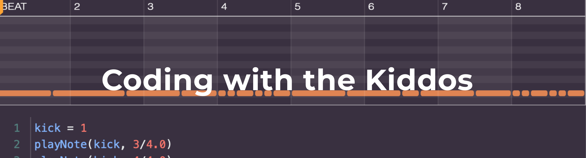

Our Goal
“Our ultimate goal is to create the next generation of scientists, engineers, technologists and mathematicians through our program,” said Davell Smith, assistant principal at Martin Luther King Jr. Middle School. “Right now, African Americans, females and minorities are underrepresented in STEM professions. So the goal is to spark their interest as they become sixth-graders, and as they grow up they may want to be able to actually create something that they can use to help the community or pursue a career [in STEM].” So, we figure why not use music to help the youth become engaged more with STEM programs and influence more potential STEM careers. If our program sounds like something that would be beneficial for your community please contact us at codebeatsteam@gmail.com.
Sign up for the newsletter (low traffic) to be notified of the details, including how and when to sign up for this camp:
https://bit.ly/registerCodeBeats
Check out VCU news article where Code Beats has been featured: https://news.vcu.edu/article/Hiphop_paves_the_way_to_coding_comprehension